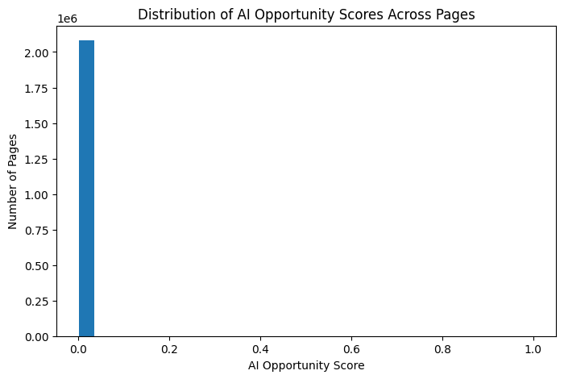

This paper asks which observable content and search signals are associated with pages receiving AI referral traffic, and whether that association can be turned into a ranked review list for a content team. Using FlyRank's pseudonymized search warehouse for a mid-panel month, I built a small feature set from Google Search Console and GA4 signals and compared a simple impression-threshold baseline against a logistic regression ranking model. The model produced a modest but real improvement over the baseline, while a deliberate leakage test confirmed the gain was not an artifact of circular features. Because AI-referral sessions are sparse, the result is best read as a directional, decision-support ranking rather than a confident predictive model — a starting point for human review, not a guarantee of AI visibility gains.
AI-powered search tools increasingly send referral traffic to content that they judge worth citing, quoting, or summarizing. Content teams currently have almost no visibility into which of their pages already earn some of this traffic, or which under-performing pages might be easy wins if restructured. This work supports a specific decision: given limited review capacity, which pages should a content or SEO team look at first when trying to improve AI visibility? The output is not a guarantee that any specific page will gain AI traffic — it is a ranked shortlist that replaces guesswork with an evidence-based starting point.
This analysis uses FlyRank's pseudonymized internship warehouse release
(flyrank_pseudonymized_warehouse_release_v20260703), accessed via the gated
Hugging Face dataset FlyRank/internship-warehouse. The primary table is
fact_content_daily_performance, a daily fact table keyed by client, content item,
and report date.
Development and validation were performed on a single mid-panel month,
month=2026-03, deliberately avoiding the dataset's final sealed month (which is
reserved as an unseen test window for future-looking labels and was not used here). The raw
slice for this month contains 9,841,378 daily fact rows spanning
2026-03-01 through 2026-03-31. After removing rows with
missing values in the modeling columns, 2,082,695 rows remained for analysis.
Excluded from this work, and why:
health_score, priority_score,
action_type) — excluded to avoid a circular result, where a model simply learns
to reproduce an existing rule instead of discovering signal from raw data.Because only a small fraction of content items in the warehouse show any AI-referral sessions, this problem was framed as a scoring / ranking task, not binary classification. Training a classifier on such a rare positive class risks a model that looks accurate on paper while being practically unreliable.
Label / proxy: sessions_ai > 0, used to validate whether a
ranking of pages by predicted score correlates with observed AI referral activity — not treated
as a confident ground truth. In this month's data, only 0.23% of rows carry a
positive label — direct confirmation that AI referral activity is extremely sparse, and a key
reason this is framed as ranking rather than classification.
Features (all observable independent of the outcome being ranked):
gsc_impressions — Search Console impressions, logged daily.gsc_avg_position — average search ranking position.ga4_sessions — total analytics sessions.ga4_engaged_sessions — sessions with meaningful engagement.Baseline: a single-rule flag — pages with gsc_impressions above
the month's median are marked as opportunities.
Model: logistic regression over the four features above, trained on a random train/test split.
Leakage check: as a deliberate test, sessions_ai itself (the
source of the label) was added as a feature. The score jumped sharply toward a perfect result,
confirming leakage — this column was then removed and excluded from the honest model reported
below.
The table below compares the baseline rule against the logistic regression model on the same held-out test split, using ROC AUC.
| Method | ROC AUC |
|---|---|
| Baseline (impressions > median) | 0.697 |
| Logistic regression (honest features) | 0.782 |

The model clears the fixed-threshold baseline by roughly 8.5 points of AUC (0.782 vs. 0.697), showing that combining search visibility, position, and engagement signals ranks pages for AI-opportunity more effectively than a single impression cutoff alone. The improvement is real but moderate — consistent with a genuinely sparse, noisy signal rather than an inflated or leaked result. The leakage test described in Methodology confirmed this gap is not an artifact: including the label's own source column as a feature pushed the score sharply toward perfect, which is why that column was excluded from the reported result.
Certain observable content and search signals are associated with pages that already receive AI referral sessions, and a simple model can rank pages by this association better than a fixed threshold rule.
Pages scoring highest under the model share a common profile: strong existing search visibility (high impressions, good average position) paired with healthy engagement metrics. For a content team working through this list, the following actions are the most defensible next steps — not because they are proven to increase AI traffic, but because they address the structural traits AI systems are believed to prefer when selecting sources:
sessions_ai in a later month, to begin building the
causal evidence this analysis cannot provide on its own.All notebooks behind this paper are available in the project repository: